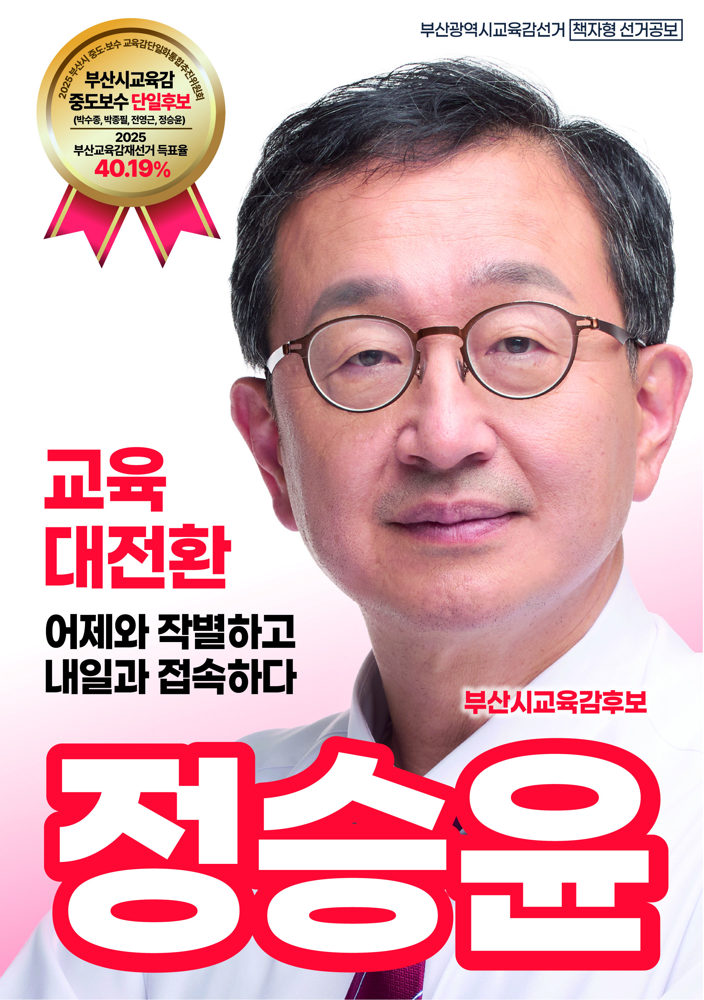

기초는 단단하게, AI는 누구나, 미래는 세계로 — 부산교육의 방향을 바꾸겠습니다.
AI를 일부 학생의 특권이 아니라, 모든 부산 학생의 기본 역량으로 만들겠습니다.
읽기·쓰기·수학·문해력부터 책임지는 단단한 공교육을 세우겠습니다.
권리만이 아니라 책임을, 실력만이 아니라 사람됨을 함께 가르치겠습니다.
부모의 형편, 학교의 이름, 사는 지역 때문에 아이의 가능성이 막히지 않게 하겠습니다.
입시에서 끝나는 교육이 아니라, 배움이 진학·취업·창업·정착으로 이어지게 하겠습니다.
부산에서 배운 아이들이 대한민국을 넘어 세계와 연결되도록 하겠습니다.
카드를 누르면 공약별 상세 정책을 한 페이지로 볼 수 있습니다.
부산발 AI 교육 대전환으로 기초는 강하게, 미래는 똑똑하게
자세히 보기 → 02입시에서 끝나는 교육이 아니라, 자기 삶을 꾸려갈 힘을 길러주는 교육
자세히 보기 → 03권리만이 아니라 책임을, 실력만이 아니라 먼저 사람됨을
자세히 보기 → 04AI시대에도 기본은 읽기·쓰기·계산하는 힘. 한 명도 놓치지 않겠습니다
자세히 보기 → 05학교와 가정, 지역이 함께 아이를 키우는 부산교육
자세히 보기 → 06책상 앞 공부만이 아니라, 몸과 마음이 함께 성장하는 학교
자세히 보기 →부산 시민에게는 진짜 부산 사람. 학부모에게는 교육의 부담을 함께 겪어본 사람.
학력 · 금사초·중학교, 내성고등학교 졸업 / 서울대학교 법과대학 공법학과 졸업 / 부산대학교 일반대학원 공법전공 석사, 박사수료
현직 · 부산대학교 법학전문대학원 교수
주요 경력 · 전 중앙행정심판위원장(차관급) / 전 국민권익위원회 부위원장 겸 사무처장(차관급) / 전 진실·화해를 위한 과거사 정리위원회 상임위원(차관급) / 전 정부공직자윤리위원회 위원 / 전 공익법무관·검사·변호사 / 전 부산대학교 홍보실장, 법률상담소장 / 황조근정훈장 수훈(2012)